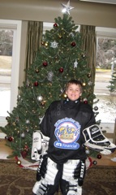
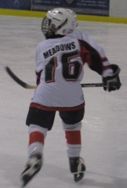
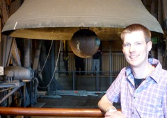
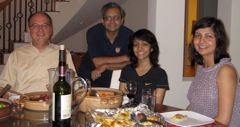
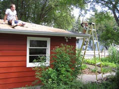
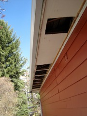
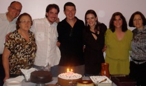
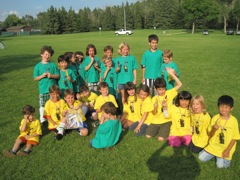
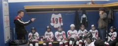

|

|
2011: Lâminas Batem no Gelo
|

|
Este blog anual de final de ano começou antes da palavra
"blog" ter sido inventada, antes ele era chamado pela antiga palavra
"carta." Ele também está disponível
em Ingles. Se você quiser ler
edições anteriores você pode
encontrá-las aqui

Leonor Cunha
|
Nós passamos o Natal de 2010 e o feriado de ano novo
na casa de praia da Vovó em Xangrilá no Rio
Grande do Sul. Foi ótimo rever a família e os
amigos de lá de novo. Um dos pontos altos para o
Daniel foi um dia de chuva em que fomos só eu e ele
para a praia. Quando chegamos lá fomos convidados
para entrar numa pelada de futebol de praia para todas as
idades. Com a minhas habilidades não existentes para
jogar futebol, jogar uma pelada por 1.5 horas na chuva foi
uma tortura. Mas o Daniel estava se divertindo tanto que
valeu a pena.
Dois dias antes do Natal, Dona Leonor, uma grande amiga (e
mãe do Beto, um querido amigo do tempo da faculdade),
morreu repentinamente em Porto Alegre. Eu dirigi para Porto
Alegre para passar algumas horas com a família durante a
noite no velório e retornei imediatamente para a praia para
assar bolachinhas de Natal com o Daniel para o Papai
Noel. Eu estava muito triste com a morte da Leonor, mas me
senti privilegiado por poder ter estado lá para
compartilhar este momento com o Beto, seu único filho.
Depois do Natal nós tiramos alguns dias com a minha irmã
Salete para ir para São Francisco na Serra Gaúcha e
também fomos ver o "Natal de Gramado," um grande show nas
ruas de uma bela cidade turística no Sul do Brasil. Foi um
grande evento, mas o Daniel não entendia porque que alguém
iria querer criar neve artificial no meio do verão. Quando
nós retornamos da praia no Brasil para Edmonton nós
encontramos mais de um metro de neve nas nossas
calçadas. Uma semana depois nós mantivemos nossa tradição
de celebrar o "Natal-depois-do-Natal" em casa com alguns
amigos.
|

Scott, Daniel, Nelson, Salete (Sao Francisco, RS, Brazil, Dezembro 2010)
|
|

Mikaela (Mak) Chen, Daniel Meadows and Belinda Campbell (Calgary, Maio 2010)
|
Em Fevereiro nós recebemos uma chamada telefônica da
meia-irmã do Daniel, Mak, para nos dizer que a mãe deles,
Belinda, tinha morrido em Calgary. Depois ficamos sabendo
que ela teve um acidente vascular central e morte cerebral
instantânea. Ela ainda sobreviveu por uma semana, mas não
havia esperança de recuperação. Ela tinha 38 anos de
idade. Levou vários meses para o Daniel compreender o que
havia acontecido porque ele só tinha contato com ela uma
vez por ano. Em Maio, quando nós fomos visitar Mak e a
outra meia-irmã deles, Emily, o Daniel viu a Mak pela
primeira vez sem a Belinda. Foi então que ficou claro para
mim que ele compreendeu que a mão dele havia partido para sempre. Eu fico
feliz que o Daniel e a Belinda tinham tido uma excelente
visita no ano anterior e que nós temos fotos deles se
divertindo juntos.
Em Novembro a Emily veio com a família dela de Calgary
para Edmonton pra visitar o Daniel. O Daniel ficou muito
feliz de compartilhar duas grandes paixões com a Emily: nós
fomos a um concerto de Halloween para crianças da Orquestra
Sinfonica de Edmonton (o Daniel adora concertos da orquestra)
e a familia da Emily foi assistir um dos jogos de hockey do
Daniel.
|

Scott, Nelson, Howard, Daniel and Emily (Winspear Centre, Outubro 2011)
|

Daniel, Lexi, and Laureen in Disney (Março, 2011)
|
Em Março nós viajamos muito. Eu fui duas
vezes para a Europa e o Scott foi duas vezes para a
Flórida. Na minha primeira viagem eu fui para Karlshure e
também visitei Stuttgart no final de semana. Na segunda
viagem eu visitei Frankfurt por um dia, e depois fui para
Saarbruken, Muenster, Rheine, e Cologne na Alemanha,
então fui para Chamonix na França e fiz uma
rápida parada em Geneva na Suiça antes de
retornar para casa. Eu fui a Rheine para visitar meus
amigos Matthias e Anja. Eles são um casal que eu
encontrei num vôo de Houston para Amsterdam em Dezembro
de 2009. Nós mantivemos uma correspondência
regular por email, e eles me convidaram para visitar durante a
minha viagem à Alemanha. Eles foram ótimos
anfitriões e eu tive uma excelente visita daquela parte
da Alemanha, fiz um passeio de barco no rio Rheire, e subi na
torre da famosa catedral de Cologne com o Matthias.
Na semana entre as minhas duas viagens para a Alemanha o
Scott foi para Miami para uma reunião do projeto no qual ele
estava trabalhando. Ele retornou para casa só para partir de
novo. Desta vez, enquanto eu estava viajando na Europa, o
Scott e o Daniel foram para uma viagem para Orlando com of
pais do Scott, a tia Diane, e as primas do Daniel, Laureen e
Lexi. Com tres criancas quase da mesma idade, eles estavam
muito ocupados indo a parques de diversões e brincando na
piscina do condomínio que eles alugaram.
|

Matthias na Torre da Catedral (Cologne, Alemanha, Março, 2011)
|
No final de 2010 nós descobrimos que alguns dor problemas do
Daniel na escola estavam relacionados com o fato de que ele tem a
Disordem da Deficiencia de Atenção e Hiperatividade (ADHD em ingles
ou DDA em Portugues). Uma vez que nós começamos tratamento com
medicação a habilidade dele concentrar-se melhorou bastante. Ele
também tem alguma combinação do que os especialistas chamam de
"Deficiências de Aprendizado." O Scott e eu fomos a vários
seminários para aprender sobre estas condições e também sobre as
melhores estratégias e práticas para trabalhar com o Daniel.
No final de 2010 eu comecei um programa de "escola em casa" com o Daniel. Todos os sábados e domingos que nós dois estamos em casa nós passamos toda a manhã trabalhando em escola em casa. Eu descobri dois bons programas, um chamado
Jump
Math e o outro é a
Clinica de Leitura, que usa um método chamado
"Phono-Graphix" para ensinar a ler. Este método funcionou muito melhor para o Daniel do que a memorização de palavras frequentes que a escola estava usando (eu acho que este método também seria melhor para estrangeiros). Nós também completamos todo o programa
BBC Dance Mat
Typing para que o Daniel aprenda a digitar no computador. Nós
fizemos escola em casa todas as semanas durante todo o ano. Meu
principal objetivo é para o Daniel se sentir mais confidente
academicamente e para que ele possa se manter integrado na escola de
nosso bairro. Nós tivemos psicólogos trabalhando com o Daniel para
ajudá-lo a lidar com as reações dos colegas à condição
dele. Nós também tivemos que fazer muito trabalho com a escola, e eu
entrei no conselho de pais e mestres para que nós estejamos bem
conectados com a escola. Uma coisa que nós aprendemos é que para ser
um defensor eficiente você tem que falar sobre estes problemas com os
outros pais e com as pessoas em suas relações. Agora o Daniel está
indo bem. Ele continua atrasado no aprendizado em relação a turma,
mas existe um programa acadêmico individualizado para ele. Ele está
aprendendo no ritmo que ele pode. Ele está feliz em ir para a escola
e ele sente que ele tem sucesso na escola. A minha expectativa é que
nós teremos que continuar fazendo trabalho adicional em casa com ele
por muito tempo. Quem tem DDA tem que lidar com esta condição por
toda sua vida.
|
Em Abril eu consegui fazer uma breve visita à minha
escola de pós gradução em Austin (eu fui o palestrante
convidado para o seminário de Arquitetura de Computadores na
The University of Texas at Austin) antes de ir a Toronto para
uma reunião rotineira de pesquisa na IBM. Foi ótimo me
hospedar com o Joydeep Ghosh, meu orientador de doutorado, e
visitar a família dele. Foi uma pena que não deu tempo de
encontrar o Egídio na minha breve estada em Austin.
|

Nelson, Joydeep, Robina, Samira (Austin, TX, Abril 2011)
|
|

|
Nós fizemos dois projetos de melhoria da casa no verão. O
primeiro foi substituit o telhado de nossa garagem. Foi um
excelente projeto familiar. O Daniel foi um ótimo ajudante
durante todo o projeto e o Scott também trabalhou muito junto
comigo. O segundo eu fiz sozinho. Eu abri a parte de baixo da
aba do telhado para cortar buracos para melhorar a
ventilação do espaco entre o forro e o telhado. O objetivo
é fazer aquele espaço ficar mais frio para evitar a
formação de barreiras de gelo acima do telhado que são
causadas pelo derretimento da neve no inverno e causam
penetracao de água pelas paredes externas da casa. Foi muito
trabalho, mas quando eu terminei de colocar tudo de volta no
lugar ninguém poderia dizer que eu tenha feito alguma coisa!
Enquanto eu trabalhei na aba do telhado o Scott esteve ocupado
com o jardim e a horta. Ele criou novas áreas no jardim e
também plantou uma bela horta. Este verão nós também
contratamos uma companhia para refazer o concreto na nossa
garagem e entrada de carro. Então nós compramos uma
excelente cesta de basquete para o Daniel poder jogar basquete
na entrada do carro.
|

|
Em Junho eu fui para uma conferência em San Jose na
Califórnia. Foi ótimo rever colegas de profissão tais como Barbar
Rider e Laurie Hendren. Eu também tive a sorte de encontrar um antigo
aluno da Universidade de Alberta, Luca Piredu, com quem eu gosto de
conversar e que mudou para a Itália a alguns anos. Eu também
aproveitei a oportunidade para me encontrar com meus amigos Guillaume
e Kurt, dos meus tempos de pós-graduação em Austin, enquanto eu
estava lá. Peng Zhao, meu ex-aluno de doutorado, agora trabalha na
Huawei. Ele me convidou a dar uma palestra convidada na Huawei. Foi
ótimo conhecer um pouco mais desta companhia que cresce tão
rapidamente e também conversar com o Peng.
No caminho de volta para Edmonton eu visitei Corvallis no Oregon
para dar uma palestra convidada na Oregon State University e para
encontrar meus amigos Kagan and Irem (também dos meus tempos em
Austin).
O Daniel teve um verão muito ocupado com "Cool School," um
programa que combina esportes com escola, e muitas colonias de férias
de esportes. Os favoritos para ele foram futebol e hockey. Em algumas
semanas ele fez programas de meio dia apenas para que nós pudéssemos
trabalhar na "escola em casa" no restante do dia.

Nelson, Dioraci, Tiago, Marco, Maiara, Fernanda and Salete (Brasilia, Julho, 2011)
|
Na metade de Julho eu fui em uma pequena ronda acadêmica
para o Brasil onde eu visitei três universidades. Fui muito
bem recebido pela Liria Sato na USP, pelo Edson Borin e o
Sandro Rigo na Unicamp, e pela Alba Melo na UnB. Foi uma
viagem super rápida com uma palestra em uma universidade
diferente em uma cidade diferente em cada dia, mas foi uma
ótima maneira de reconectar com alguns dos meus colegas no
Brasil. Minha querida amiga Glória pegou um ônibus de Santos
para São Paulo depois do trabalho para que nós pudéssemos
ter um jantar muito especial na minha única noite em São
Paulo.
Naquela viagem eu também visitei toda a minha família em
Brasília onde nós celebramos os 50 anos do meu
irmão. Depois da celebração nós fomos por dois dias para a
Chapada
dos Viadeiros, um lugar muito bonito com uma paisagem de
cerrado e chapadas e com muitas cachoeiras no estado de
Goiás. Um outro evento importante nesta viagem foi reconectar
com o João Campari, um amigo muito querido que eu não tinha
visto desde os nossos dias de pós-graduação em
Austin. Portanto, neste ano eu visitei a maioria dos meus
amigos dos anos que passei em Austin no Texas.
|

Maiara, Dioraci, and Marco (Chapada dos Viadeiros, July, 2011)
|
Na minha ida para o Brasil eu fiz uma parada em Dallas para deixar
o Daniel com os avós americanos. Ele teve mais de uma semana de muita
diversão na casa deles. A vó dele organizou outras crianças para
brincar com ele. Ele também gostou muito de ajudar o avô a organizar
e contar a grande coleção de armas históricas dele. Enquanto eu
estave em Dallas eu tive tempo de ir almoçar com o meu amigo Pedro e
a esposa dele, Cláudia. Foi ótimo encontrá-los. Eu encontrei o
Daniel em Dallas no meu retorno do Brasil. Enquanto isto o Scott foi
de férias para as montanhas rochosas no Canada (Eu fiz uma piada de
que este é o melhor plano para umas férias familiares: coloque cada
membro da família em um país diferente!). Infelizmente o Scott teve
dois deslocamentos do ombro durante a viagem dele e acabou indo para o
hospital em uma ambulância duas vezes.

|

|
As tradicionais duas festas de aninversário para o Daniel
em Agosto was um grande sucesso. Nós tivemos um belo dia para
a nossa festa no jardim de casa e todos estavam num excelente
esp\írito de festa. Para a festa das crianças no parque um
amigo organizou um jogo de futebol e nós mandamos fazer
camisetas comemorativas para todas as crianças que
vieram. Minha amiga Silvia fez dois belos bolos temáticos pra
cada uma das festas. Seguindo a nossa tradição a Gaga e o
Grandpa foram a Edmonton para nos ajudar a organizar as festas
e para celebrar conosco. Na nossa festa no jardim nós fizemos
um brinde em comemoração dos 50 anos de casamento deles que
ocorreu em Junho.
|

|

|
No final de agosto o Scott, o Daniel e eu fomos em uma
viagem para um alojamento nas montanhas. Em anos anteriores eu
e o Scott havia ido para alojamentos remotos que somente podem
ser acessados por caminhadas de mais de 10 Km. Desta vez nós
queríamos levar o Daniel conosco e nós achamos que começar
com uma caminhada de 10 Km não era uma boa idéia. Portanto
nós fomos para o
Cross River Wilderness
Centre, um alojamento ao qual nós podiamos ir de
carro. É um belo lugar com várias lugares para caminhadas, e
eles tem um excelente chefe que preparou excelentes
refeições. Nós tres fomos numa caminhada durante o fia. O
Daniel estave muito feliz porque ele se deu muito bem e gostou
muito de faze caminhada nas montanhas. Nossa caminhada foi nas
margens do rio Cross, nós caminhamos no lado de um grande
canyon com belas quedas de agua e paramos para fazer um picnic
numa bela praia de rio onde o rio Cross encontra o rio
Kootenay. A água estava extremamente gelada. Apesar disto,
sendo um menino Canadense, o Daniel ficou só de cueca e
entrou no rio.
|

|
Imediatamente antes do início do semestre eu tive que presidir
sobre um painel de especialistas numa conferência international que
ocorreu no Banff Centre. Foi
ótimo encontrar o Tulsi, a Parimala, e os filhos deles lá. Eu levei
o Scott e o Daniel comigo e eles aproveitaram para visitar Banff
enquanto eu trabalhava. No dia em que nós retornamos para casa nós
fomos para um pequeno passeio a cavalo na base das montanhas. O Daniel
estava muito orgulhoso que ele conseguiu manejar bem o cavalo
dele.
No início de setembro hockey apareceu na nossa família. O Daniel
sempre foi interessado em hockey desde que ele tinha 2 anos de idade e
sempre assistiu hockey na TV. Uma das atividades favoritas dele para
recreios na escola em casa é jogar hockey no andar debaixo de
casa. Portanto, no inverno nós colocamos ele em um programa no nosso
bairro para aprender a patinar no gelo. As lições foram em pista de
patinação em céu aberto e o limite de temperatura para cancelar as
lições foi -18 C. Com as baixas temperaturas em Fevereiro e Março
em Edmonton, frequentemente era -18 C quando nós estavamos na
lição. O Daniel gostou tanto de patinar no gelo que ele queria ficar
por mais tempo depois da lição mesmo quando a temperatura era tão
baixa. Em agosto o Daniel teve aulas de hockey na universidade. Eram
apenas 3 horas por dia, mas o Daniel estava sempre exausto no final da
lição.
|
Durante o mes de setembro o Daniel teve avaliações de
habilidades no gelo para decidir em que nível ele iria jogar,
e no início de outubro nós encontramos o treinador e o time
dele: "Balas de Prata" (Silver Bullets). Eles estão em nível
8 (nível 1 é o mais alto, nível 10 é o mais baixo). Nós
tivemos muita sorte, o treinador Mike é excelente e nós
todos gostamos muito dele. O Daniel classifica o treinador
Mike como o melhor instrutor que ele já teve. Ter um filho em
hockey é um enorme comprometimento de tempo e nós não
tínhamos idéia do que nós estávamos nos metendo até que
nós nos tornamos "pais de hockey." Tem um treino e um jogo em
todo final de semana. Apesar de existirem mais de 35 arenas
para patinação no gelo em Edmonton, tempo no gelo é um
recurso muito escasso (tem mais de 60.000 crianças jogando
hockey na província de Alberta). Portanto, os horários e os
lugares para os treinos e jogos variam muito. Em um sábado
nós tinhamos que que estar na area as 6 da manha para um
treino. Além disto, tem todo o equipamento que nós temos
que organizar, carregar, colocar no jogador, tirar, etc. Por
causa de segurança, se qualquer parte do equipamento estiver
faltando, a criança não pode entrar no gelo. E se voce
quizer que o seu filho se divirta no gelo, ele precisa
melhorar suas habilidades de patinação. Portanto, nós
começamos a levar o Daniel em algumas noites para patinar em
"patinação pública," que consiste em uma hora por semana em
que cada arena está aberta para qualquer um patinar no
gelo. Isto nos levou a descobrir toda uma cultura Canadense
que nós até então ignorávamos. De certa forma é similar a
cidadãos de vilas na Itália e na Espanha indo para
caminhadas ao redor da praça depois do jantar. A diferença
é que os Canadenses atam os patins e andam em torno de uma
arena de gelo.
|

Treinador Mike dando instru,cões antes do jogo de hockey.
|
Nós gravamos alguns dos jogos do Daniel e colocamos alguns clips
no youtube: Gol
do Jacob, Grande Jogada da
Taytum (única menina no
time), Gol do
Matthew. Usualmente o Daniel joga na defesa, a camisa dele é
número 16. Num jogo em dezembro ele jogou como o
goleiro (algo que ele
queria fazer por um longo tempo). Ele jogou muito bem no gol e foi
aplaudido por todo o time e pelos pais quando nós voltamos para
o vestiário. Jogar hockey foi excelente para aumentar a
auto-confiança do Daniel e para aumentar o círculo de
coleguinhas dele.
Em outubro nós ficamos sabendo que a nossa grande amiga, Fran
More, está se mudando de volta para Brisbane na Austrália. Desde o
nascimento do Daniel a Fran se tornou numa figura de uma tia/avó para
o Daniel. Ela sempre foi nosso principal suporte quando nós
precisamos que alguém cuide do Daniel por causa de nossas viagens ou
compromissos profissionais. Fran também era a coordenadora geral do
nosso departamento. Nós sentiremos muita falta da Fran tanto pessoal
como profissionalmente. Quando o Daniel aprendeu que a Fran estava se
mudando, a primeira reação dele foi: "Mas quem que vai tomar conta
de mim então?"
O projeto de pesquisa que pagava o contrato no qual o Scott estava
trabalhando em pesquisa na Faculdade de Medicina acabou em
Setembro. Ele continuou ocupado terminando parte da escrita do
trabalho de pequisa em alguns meses. Agora ele está procurando o que
fazer.
Apesar de estar lecionando duas disciplinas no outono, eu ainda
consegui fazer duas viagens professionais, uma para Toronto para
encontrar com colegas na IBM, e também para o décimo aninversário de
um workshop que nós começamos na Conferência do Centro de Estudos
Avançados da IBM dez anos atrás. Foi muito bom também sair para
celebrar uma importante promoção do Kit Barton, um ex-aluno de
doutorado que está tendo muito sucesso na IBM. A minha segunda viagem
foi para Seattle para o Supercomputing 2011, uma grande conferência e
feira para computação de alto desempenho. Lá eu tive a oportunidade
de ter um raro jantar a dois com o Guang Gao, meu supervisor de pós
doutorado quando eu estava em Delaware, e um grande amigo.
Na universidade eu continuo muito ocupado com muitos compromissos
com os meus estudantes de pós graduação, com a universidade, e com
a comunidade de pesquisa. Este ano eu me tornei um membro do Senado da
Universidade, o que me colocou em contato com um círculo muito maior
de pessoas da comunidade que suporta a universidade. Uma coisa que foi
muito legal nas últimas semanas do semestre foi receber
reconhecimento pela qualidade das minhas aulas. Eu recebi uma carta do
diretor da faculdade ressaltando que os meus alunos me classificam
como um dos melhores instrutores da Faculdade de Ciências. Foi muito
legal receber mensagens pessoais de estudantes dizendo que eu
proporcionei a eles a melhor experiência de aprendizado no programa
acadêmico deles. Foi ainda mais significativo quando algumas destas
mensagens vieram de estudantes que não tiveram notas altas na
disciplina. Eu acredito que as minhas aulas benefiam-se muito do meu
trabalho em casa com uma criança com dificuldade de aprendizado.
No início de dezembro o Scott fez uma cirurgia para resolver o
problema com os deslocamentos de ombro. Foi uma cirurgia em que ele
retornou para casa no mesmo dia apesar de ter tido anestesia
geral. Depois da cirurgia ele estava tomando fortes remédios contra a
dor e vai ter que manter o braço imobilizado por seis semanas anted
de começar terapia. Na noite seguinte a cirurgia dele eu estava
cortando uma moranga para fazer o jantar --- eu estava com pressa para
terminar antes de pegar o Daniel na creche de depois da escola --- e
um pedaço da moranga rolou embaixo da minha faca e a faca cortou a
ponta do meu polegar. Eu acabei na emergência do hospital para
receber vários pontos atravessando a minha unha. Eu não vou perder
nenhuma função do polegar, mas vai ter uma cicatriz. Porém agora
com o Scott podendo usar apenas um braço e comigo com apenas um
polegar opositor funcionando, ficou difícil para atar patins e o
Daniel é o único que pode abotoar botões lá em casa.
Este foi um grande ano para reconectar com mentores e amigos. Eu
estou terminando de compor este blog enquanto a gente decola de
Edmonton para Toronto onde vamos conectar para Dallas no nosso caminho
para Ardmore em Oklahoma onde nós vamos assar bolachinhas para
esperar a chegada do Papai Noel na casa dos pais do Scott.
Nós esperamos que você tenha excelentes feriados de Natal e Ano
Novo.
Nelson, Scott & Daniel


{kind=link}
{kind=link}
{kind=link}
{kind=link}
{kind=link}
{kind=link}
{kind=link}
{kind=link}
{kind=link}